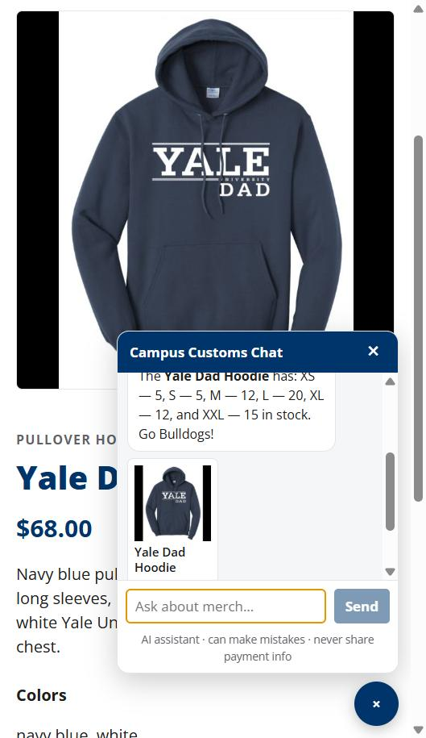
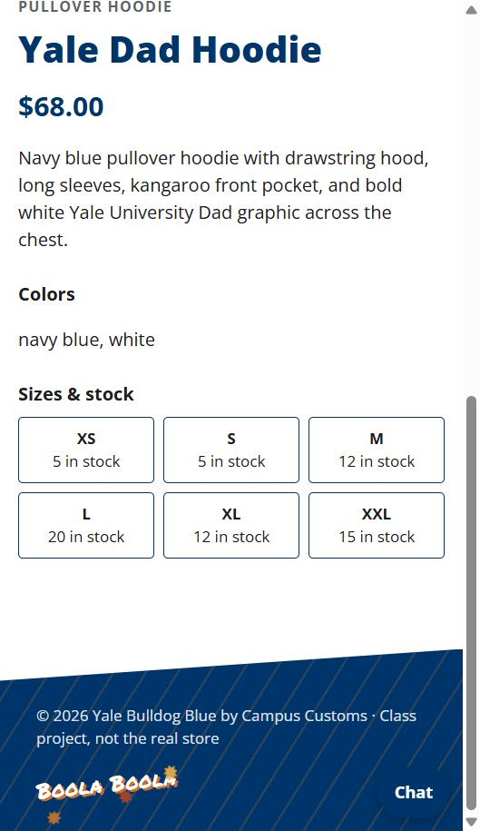
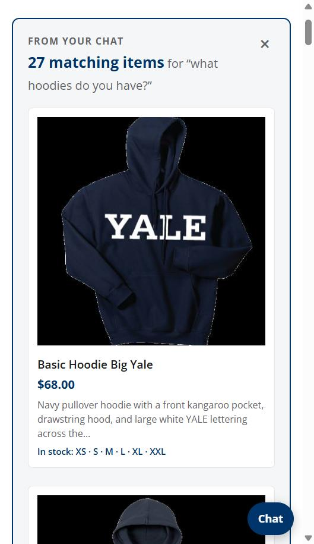
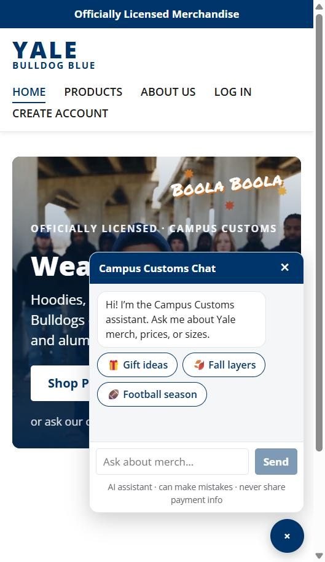
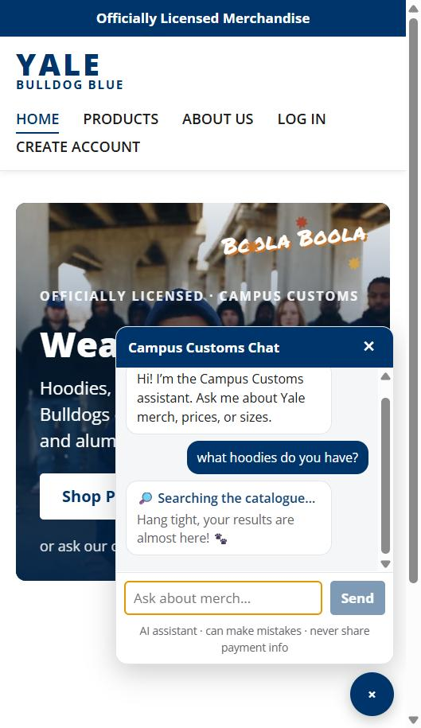

Campus Customs App Check
Live test of the running site · Oct 24, 2026 · frontend http://localhost:5173 (React + Vite) · backend http://localhost:8000 (FastAPI + PydanticAI agent on Portkey, gpt-6-luna) · data from data/campus_customs.db
1. Inventory levels of an itemChat and product page match the database for every size.
PASS
PASS
2. Dynamic search result cards"What hoodies do you have?" put all 27 hoodies on the page as cards.
PASS
PASS
3. Usability: suggestions + live statusSeasonal chips appear; the chat shows the agent's real steps while it works.
PASS
PASS
How it was tested: I used the site in the built-in browser like a shopper (clicking, typing in the chat), then checked every number against the database with a direct SQL query. Screenshots are from a phone-width window (about 420 px), which also shows the compact chat panel.
1. Inventory levels of an item
| Steps | Opened the Yale Dad Hoodie page, opened the chat and asked: "How many of this hoodie do you have in each size?" |
|---|---|
| What the agent did | Knew "this hoodie" from the open page (page context), then called check_stock, which reads the inventory table. |
| Chat answer | "The Yale Dad Hoodie has: XS 5, S 5, M 12, L 20, XL 12, and XXL 15 in stock." |
| Product page | Sizes & stock boxes: XS 5 · S 5 · M 12 · L 20 · XL 12 · XXL 15 |
| Database | SELECT size, quantity FROM inventory WHERE product_id = 'yale-dad-hoodie' → XS 5, S 5, M 12, L 20, XL 12, XXL 15 |
| Result | PASS All three agree for all six sizes. |


2. Dynamic search result cards
| Steps | From the Home page, asked the chat: "what hoodies do you have?" |
|---|---|
| What happened | The agent searched in browse mode (find_products, category hoodie, up to 30) and returned the matching product ids. The backend turned them into cards from the database, and a "From your chat: 27 matching items" section appeared at the top of the page. |
| Cards | 27 cards, each with image, name, price, a short description and sizes in stock. 0 broken images. First cards: Basic Hoodie Big Yale $68, Brooks Brothers Double Knit Full Zip Hoodie $88, Champion Full Zip Hood $88. |
| Database | 27 products in the hoodie category. Every card clicks through to its product page. |
| Result | PASS The card count matches the catalogue, with no made-up products. |

3. Usability feature: suggestion chips and live status
| Suggestion chips | An empty chat shows 🎁 Gift ideas · 🍂 Fall layers · 🏈 Football season. The seasonal and sport chips change with the month (e.g. ❄️ / 🏒 in winter, ⚾ in spring and summer, 🏟️ The Game in November). Tapping one sends its question. |
|---|---|
| Live status | While the agent works, the chat shows its real current step, streamed from the backend (not a timer): 💭 Thinking → 🔎 Searching the catalogue → 📦 Checking stock → ✍️ Writing your answer, with "Hang tight, your results are almost here! 🐾". |
| Compact phone chat | On small screens the chat is a 280×340 box in the lower right (about 30% of the screen), so the page and its cards stay visible. |
| Result | PASS |


Also checked today
- Safety: a message with a test card number (4242…) had the number removed before the AI saw it; the chat showed "[card number removed]" plus a 🔒 notice within 1 second.
- Rate limit: the 7th guest message within a minute got HTTP 429 with
Retry-After: 60and the "Whoa, Bulldog!" message (tested with a stand-in agent). - Bug found and fixed: Portkey's response cache made a repeated question fail (Azure rejected the cached id). After the fix the same question worked 3 times in a row.